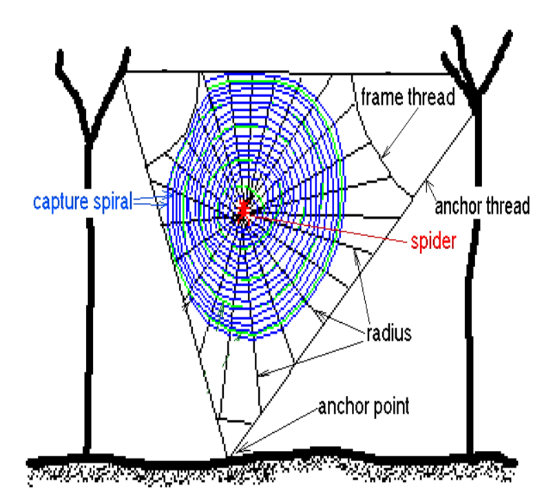

先讀文章、作答下方的題目，再展開最後的「看答案與文章結構」。也可以到互動練習線上作答，交卷後自動批改。
Spider webs are one of the most fascinating examples of animal architecture. The most beautiful and structurally ordered are the orb webs. The main function of the web is to intercept and hold flying prey, such as flies, bees and other insects, long enough for the spider to catch them. In order to do so, the threads of the web have to withstand the impact forces from large and heavy prey as well as environmental forces from wind and rain for at least a day in most cases.
The orb web is found to have two main characteristics. The first is its geometry, which consists of an outer frame and a central part from which threads radiate outward. Enclosed in the frame are capture spirals winding round and round from the web center out to the frame. The whole web is in tension and held in place by anchor threads, which connect the frame to the surrounding vegetation or objects. The second and perhaps most important characteristic is the material with which it is built. Spider silk is a kind of natural composite that gives this lightweight fiber a tensile strength comparable to that of steel, while at the same time making it very elastic. Two types of silk threads are used in the web. One is highly elastic and can stretch to almost twice its original length before breaking and, for most types of spiders, is covered in glue. This type is used in the capture spiral for catching and holding prey. The other is stiffer and stronger, and is used for the radius, frames and anchor threads, which allows the web to withstand prey impact and to keep its structural strength through a wide range of environmental conditions.

44.What is this passage mainly about?
45.What does the word “so” in the first paragraph refer to?
46.Which part of the web is used for supporting the web itself?
47.According to the passage, which statement is true about the silk threads?
| 題號 | 官方答案 | 答對率 | 鑑別度 |
|---|---|---|---|
| 44 | (B) | 74% | 55 |
| 45 | (A) | 74% | 58 |
| 46 | (C) | 66% | 56 |
| 47 | (B) | 43% | 33 |
答對率與鑑別度出處：大考中心 100 學年度指定科目考試統計圖表：英文科答對率及鑑別指數表
逐題解析還在撰寫中，目前先提供官方答案、數據與文章結構。